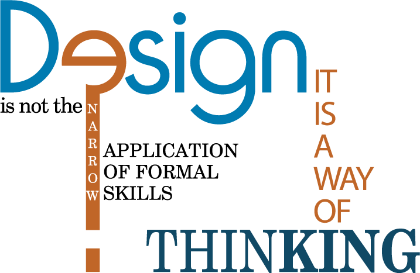

Design is a visual form of communication
That opens my imagination, allowing me to bring design to life through the composition of lines, shapes and typography.

I am always love to learn and interested to work with others who value craftsmanship and creating experiences that are memorable and emotionally engaging. I am a highly analytical problem-solver with over a decade of experience in print and packaging designs. I am a motivated self-starter and team player.
Strength
I have great knowledge of packaging, labeling, flyers, booklets, business card etc. designs. And good knowledge of animation and video editing. Currently I am learning web programing.
CAREER HISTORY
Graphic Designer
CapteeVate (NY) July 2014 - SEPT. 2016
Create custom designs for print on the promotional items like T-shirts etc. Taught co-workers new designing tools and skills to create a better work flow. Communicate directly to clients to satisfy their requirements.
Senior Graphic Designer
Conception Art (Lhr-Pak) Feb 2013 - Feb 2014
Design for different medicine firms for packaging. Met clients to discuss their needs, objectives and budgets. Created a wide variety of graphic art and promotional materials. Taught juniors new design tools.
Senior Graphic Designer
Stylo Graphics (LHR-PAK) Jan 2000 – Jan 2013
Produced designs for both paper and tin printing. Engaged customers in the design process. Explained design concepts and ideas to clients and colleagues.
Junior Graphic Designer
Stylo Graphics (LHR-PAK) Dec 1997 – Dec 1999
Assisted Senior Graphic Designer on multiple printing projects. Provided graphical support to my colleagues and senior designers. Coordinated with vendors.
EDUCATION
Computer Since intro
Harvard University | Virtual learning. Cambridge, MA
Jun. 2020 - Currently Learning
HTML, CSS, JS, Python, Django, SQL
Graphic Designing Certificate
Hunter College | Lexington Ave, NY
Sep. 2014 - Dec. 2015
Adobe InDesign, Advance Adobe Illustrator and Photoshop, Typography, HTML, Flash, Visual Designing for everyone, Business of Graphic Designing, Making a professional portfolio
Graphic Designing Certificate
Minhaj College | Lahore Pakistan
Jan 1996 - May 1997
Corel Draw, AdobePhotoshop, Free Hand, Print Artist, Basics of Flash & 3D studio Max, MS Word,MS Excel and Inpage